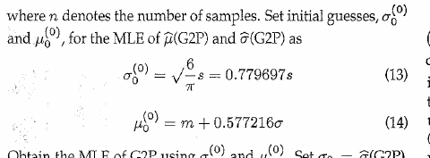

保留供查阅；当前审阅以程序和计算过程的整体呈现为主。这里不接收提交，也不代表任何未定方案已被采纳。
现行 mle.py 调用公共辅助函数，在β≥1、γ非负的范围内寻找标准似然的有限局部极大候选。Hirose论文则给出GEV空间的具体求解方案。部分算例数值一致，不能证明经过了同一算法。
辅助函数仍属于这一个MLE实现，不是供用户选择的第二版本。
原文依据
附录1：Gumbel初值，k=±Δk，逐k二次外推σ、μ并作Newton求解，再精化三参数、检查鞍点和角点。Δk=.01为建议例值。
182-105 原文 L252–290 · 附录1／PDF第9–10页当前实现
固定γ求β，恢复η，扫描位置得分与似然峰，选择有限候选中似然最大的点；没有GEV参数化、Gumbel初值或观察信息矩阵检验。
python/methods/profile_solvers.py · L35–43
35 g = float(g)
36 if g not in cache:
37 values = [] if trace else None
38 cache[g] = mle_profile(z, g, shape_lower=1., shape_evaluations=values)
39 if trace:
40 shape_records[g] = values
41 return cache[g]
42
43 grid = _location_grid()核对判断：标准似然函数对应，不等于完整复现Hirose的数值流程。是否改求解器，取决于产品希望实现一般MLE还是作者的具体算法。
可能修改：先选定目标；若保留条件剖面，引用Hirose只作数值基准。若决定按附录重做，在mle.py及其同一套辅助函数内修改。
影响：GEV路线是实质求解改造，涉及参数变换、初值、可行性、鞍点及角点；不能只替换流程文字。
说明受限域及有限候选的含义，以论文数据作数值核对；不称Hirose完整算法复现。
先确定参数域和边界约定，再在现有入口内实施GEV算法，逐步骤与原算例验收。
当前实现
公共距离函数拒绝γ<0；β下界为1。当前会在受限域中比较γ=0候选，不能搜索论文涉及的负位置方向。
python/methods/conditional_profiles.py · L16–20
16 if x.ndim != 1 or len(x) < 2 or not np.all(np.isfinite(x)):
17 raise ValueError("Expected a finite one-dimensional sample of at least two points")
18 if not np.isfinite(gamma) or gamma < 0 or np.any(d <= 0):
19 raise ValueError("Conditional location must satisfy 0 <= gamma < min(data)")
20 return d核对判断：β≥1与Hirose本文采用的条件并不冲突；γ≥0则缩小了当前的估计域。受限MLE与一般三参数模型的结论须分开。
可能修改：如果目标是寿命场景下的受限MLE，可以保留并明示。若要扩展位置域，需设计负方向搜索与发散识别，不宜只删一个if。
影响：会改变边界解、失败/发散分类和结果比较；增加搜索范围也不能自动证明找到全局最大值。
当前实现
仅返回γ<x_min的有限候选。β=1的支撑边界似然单列诊断，即便它高于所选候选，也不作为实际估计返回。
python/methods/profile_solvers.py · L102–113
102 eta_limit = float(np.mean(x - x[0]))
103 limit_ll = float(-len(x) * (1 + np.log(eta_limit)))
104 best = max(candidates, key=lambda p: p['ll']) if candidates else None
105 info = dict(status='ok' if best else 'no_finite_local_maximum',
106 solver_version=SOLVER_VERSION, strategy='profile_likelihood_finite_maxima',
107 constraint='beta>=1, eta>0, 0<=gamma<min(x)',
108 profile_grid_points=len(grid), profile_evaluations=len(cache),
109 candidate_count=len(candidates), candidates=candidates,
110 support_boundary_limit=dict(beta=1., eta=eta_limit, gamma=float(x[0]),
111 log_likelihood=limit_ll, attained_in_open_support=False),
112 boundary_limit_exceeds_selected=bool(best and limit_ll > best['ll'] + 1e-9))
113 if best:核对判断：这是不同的输出约定，不是显示格式差异。不能把当前no_finite_local_maximum解释为已经覆盖了作者角点处理。
可能修改：与实现目标一起确定是否接纳角点。若接纳，输入支持检查、概率图及后续模拟有效性检查也要同步定义。
影响：γ等于最小观测会改变后续对数距离及拟合度处理；不能在未同步约定时只放宽求解器边界。
保留当前有限估计口径；明确显示边界极限与有限候选的似然比较。
在同一MLE实现中纳入，并统一后续支持检查和未定义的概率图量。
归一化、中心化对数距离、log-sum-exp和Brent括根用于数值稳定，不必为了“像原文”删除。位置有限网格及各峰精化仍不构成穷尽全部峰的证明。
python/methods/conditional_profiles.py · L76–81
76 z = t - t.mean()
77 log_mean_power = logsumexp(beta * z) - np.log(len(d))
78 log_eta = t.mean() + log_mean_power / beta
79 ll = len(d) * (np.log(beta) - t.mean() - log_mean_power - 1)
80 w = np.exp(beta * (z - z.max()))
81 w /= w.sum()转录核对：附录式(13)原PDF为σ₀=(√6/π)s≈0.779697s；现有Markdown把根号范围转录得不一致。下图用于核对，当前程序没有使用该GEV初值，不据此修改估计器。

| 核对输入 | β | η | γ |
|---|---|---|---|
| Hirose Table 1 / case 2 | 4.5290558 | 6.2389415 | 22.092431 |
Table 2约为 β=4.529，η=6.239，γ=22.092；这里只核对结果，不证明经过GEV流程。
本轮重新执行MLE的既有原文/公式套件，9项通过；首轮七方法套件共80项通过。通过的是已覆盖的公式、若干算例和边界；不是原文所有算法步骤、数据及蒙特卡洛表已复现。上表为少量确定性核对，不是新蒙特卡洛性能结论。
Hideo Hirose，1996 · Maximum Likelihood Estimation in the 3-parameter Weibull Distribution: A Look through the Generalized Extreme-value Distribution
当前方法入口：python/methods/mle.py。核对时间 2026-11-02T21:17:20+08:00；Git基线 62e9931617，工作区含未提交改动，以下哈希标识本轮实际文件。
入口SHA-256 0657dc83fa2291874e26fd1b1da2577992bf6d52e825cccbccaa14a1d1231eec
查看逐项原文与源码摘录 · 查看来源与哈希 · 其他方法
摘录用于本轮讨论，不是另一份可编辑的算法实现。源文件变化后应重新核对；审阅期间不修改估计器或原论文。